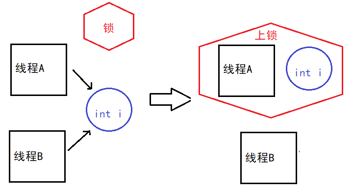

操作系统(一)线程和进程
1. 什么是线程？进程，线程，彼此有什么区别？⭐⭐⭐
进程
- 进程（Process）是计算机中的程序关于某数据集合上的一次运行活动，是系统进行资源分配的基本单位。
- 是操作系统结构的基础。
- 进程是线程的容器。程序是指令、数据及其组织形式的描述，进程是程序的实体.
线程
- 线程是操作系统最小的运算调度单位。
- 线程包含在进程中，是进程中实际执行任务的单位。
- 在一些操作系统中，线程也被称为轻量级进程。
线程和进程区别：
- 线程是进程的一部分，是进程内的实际执行单位，而进程则是操作系统分配资源的基本单位。
- 每个进程都有独立的地址空间和系统资源，而线程共享同一进程的地址空间和系统资源。
- 线程之间的切换比进程之间的切换更快，因为线程共享相同的上下文和资源。
- 线程间通信更加方便，可以直接读写共享内存，而进程间通信需要通过特定的机制（如管道、消息队列等）。
- 进程的创建和销毁比线程的开销更大。
- 进程是相对独立的，一个进程的崩溃不会影响其他进程，而线程是相互依赖的，一个线程的崩溃会导致整个进程的崩溃。
2. 什么时候用进程，什么时候用线程？⭐⭐
使用进程的情况：
- 需要独立的地址空间和系统资源：如果任务需要运行在独立的环境中，不同任务之间的数据隔离较为重要，那么可以选择使用进程。
- 需要更高的安全性和稳定性：如果一个任务的崩溃不应该影响其他任务的正常运行，使用进程可以保证更高的安全性和稳定性。
- 并行计算需求：如果任务需要充分利用多核处理器的计算能力，可以通过多个独立的进程并行执行来提高计算效率。
使用线程的情况：
- 共享数据和资源：如果任务之间需要共享数据和资源，并且数据同步和通信较为频繁，使用线程可以更方便地访问和操作共享资源。
- 轻量级任务：如果任务比较轻量级，且并行执行可以提高效率，使用线程可以进行更快速的切换和调度，减少开销。
- 实时性要求：如果任务对实时性要求较高，使用线程可以更快响应事件和处理任务。
3. 一个线程占多大内存？⭐⭐⭐
一个线程在Linux系统中大约占用8MB的内存。这是因为Linux系统中的线程栈是通过缺页异常来进行内存分配的，不是所有的栈空间都会被实际分配内存。
因此，8MB只是一个上限，实际的内存消耗会略微超过实际需要的内存。这个差额主要是由于内部损耗（每个线程内部的一些开销）所引起的，通常在4KB范围内。
4. 说说什么是信号量，有什么作用？⭐⭐
信号量是一种同步机制，它本质上是一个计数器，用于多进程或多线程对共享资源的访问。信号量的主要作用是保护共享资源，使得在一个时刻只有一定数量的进程或线程可以访问。
信号量的原理是基于 P(sv) 和 V(sv) 两种操作：
- P(sv) 操作会将信号量的值减1，如果信号量的值大于零，进程或线程可以继续访问共享资源；如果信号量的值为零，进程或线程会被挂起，直到其他进程或线程通过 V(sv) 操作释放信号量。
- V(sv) 操作会将信号量的值加1，如果有进程或线程因等待信号量而被挂起，它们中的一个会被唤醒继续执行；如果没有进程或线程等待信号量，信号量的值会增加。
通过控制信号量的值和对共享资源的访问，可以实现对共享资源的互斥访问和并发控制。
代码举例：
#include
#include
#include
std::counting_semaphore<1> semaphore; // 创建一个信号量，初始值为 1
int counter = 0; // 共享资源
void IncrementCounter() {
semaphore.acquire(); // P(sv) 操作
// 访问共享资源
counter++;
std::cout << "Counter: " << counter << std::endl;
semaphore.release(); // V(sv) 操作
}
int main() {
constexpr int NumThreads = 3;
std::vector threads;
// 创建多个线程并启动
for (int i = 0; i < NumThreads; i++) {
threads.push_back(std::thread(IncrementCounter));
}
// 等待所有线程完成
for (auto& thread : threads) {
thread.join();
}
return 0;
}
5. 多进程内存共享可能存在什么问题？如何处理？⭐⭐⭐⭐⭐
多进程内存共享可能存在以下问题：
- 竞争条件（Race Condition）：当多个进程同时访问和修改共享内存时，由于执行顺序的不确定性，可能导致数据不一致或不正确的结果。
- 数据同步问题：不同的进程可能以不同的速度访问共享内存，导致数据在读取和更新之间的时间差异，进而引发数据不一致的问题。
- 死锁（Deadlock）：如果多个进程在访问共享内存时发生互相等待的情况，可能导致死锁，使得进程无法继续执行。
为了处理多进程内存共享的问题，可以采取以下措施：
- 使用互斥锁（Mutex）：通过在访问共享内存之前获取互斥锁，并在访问完成后释放锁，可以确保同一时间只有一个进程访问共享内存，从而避免竞争条件。
- 使用信号量（Semaphore）：通过使用信号量来同步进程的访问，可以控制同时访问共享内存的进程数量，从而避免数据同步问题和死锁。
- 使用条件变量（Condition Variable）：条件变量可以用于进程间的通信和同步，它可以在特定条件满足时唤醒等待的进程，从而避免忙等待和减少资源消耗。
- 使用进程间通信机制（IPC）：使用操作系统提供的进程间通信机制，如管道、消息队列、共享内存、套接字等，可以实现进程间的数据传输和同步，确保共享数据的正确性和一致性。
6. 多进程、多线程的优缺点⭐⭐⭐⭐
多进程的优点：
- 独立性：每个进程拥有独立的内存空间，一个进程的崩溃不会影响其他进程的执行。
- 安全性：进程之间通过操作系统提供的通信机制交互，可以有效隔离和保护数据。
- 可扩展性：可以更容易地在多个机器上部署，实现分布式计算，提高系统的处理能力和吞吐量。
多进程的缺点：
- 开销：创建和管理进程的开销较大，包括内存和资源的分配、上下文切换等，可能影响系统性能。
- 通信复杂：进程间通信需要使用特定的IPC机制，编写和维护较为复杂。
多线程的优点：
- 轻量级：线程之间共享同一进程的内存空间和资源，创建和切换线程的开销较小。
- 资源共享：线程直接访问进程的共享资源，数据共享更方便，提高系统效率。
- 响应性：线程的创建和销毁速度快，可以更快地响应用户的请求。
多线程的缺点：
- 安全性问题：多个线程共享数据时需考虑同步和锁机制，以避免数据竞争和不一致的结果。
- 内存占用：每个线程都需要独立的栈空间和线程数据结构，增加内存消耗。
- 上下文切换开销：线程切换需要保存和恢复上下文，增加系统开销。
7. 多进程、多线程同步（通讯）的方法⭐⭐⭐⭐
| 类型 |
方法 |
| 多线程 |
互斥锁（Mutex） |
| 信号量（Semaphore） |
| 读写锁（ReadWrite Lock） |
| 多进程 |
管道（Pipe） |
| 共享内存（Shared Memory） |
8. 什么是线程同步和互斥⭐⭐
线程同步是指通过一定的机制确保多个线程按照一定的顺序和规则共享资源或进行协调工作，以避免出现并发访问导致的问题，例如竞态条件、数据不一致等。
互斥是一种用于保护共享资源的机制，确保同一时间只有一个线程可以访问该资源，避免出现数据竞争和冲突。通过使用互斥锁（Mutex），只有获得锁的线程才能进入临界区（访问共享资源的代码段），其他线程需要等待锁的释放。
同步是一种更广泛的概念，它意味着协调多个线程间的执行顺序和行为，以确保它们按照一定的规则和顺序执行。同步可以通过互斥来实现，但也可以使用其他的同步机制，如信号量、条件变量、事件等。

- 线程A想要访问共享资源之前，它会尝试获取互斥锁。
- 如果互斥锁当前没有被其他线程占用，线程A成功获得锁，并进入临界区，开始执行操作。
- 同时，线程B也想要访问共享资源，但发现互斥锁已经被线程A占用，所以线程B需要等待。
- 当线程A完成操作后，它会释放互斥锁，而此时线程B会被唤醒并尝试获取锁。
- 如果没有其他线程占用互斥锁，线程B可以获取锁并进入临界区，开始执行自己的操作。
- 当线程B完成操作后，它也会释放互斥锁，以便其他线程可以获取锁并执行操作。
9. 线程同步与阻塞的关系？同步一定阻塞吗？阻塞一定同步吗？⭐⭐
- 线程同步是指协调多个线程之间的执行顺序和行为，以保证数据的一致性和正确性。同步可以通过使用互斥锁、条件变量、信号量等机制来实现。
- 阻塞是指当线程遇到某些条件而无法继续执行时，暂时挂起线程的状态。具体而言，当线程发起一个阻塞式的操作（如等待I/O、获取锁、等待条件满足等）时，它会进入阻塞状态，暂停执行，直到条件满足或被唤醒。
- 同步机制在某些情况下可能会导致线程阻塞。例如，在互斥锁的场景中，当一个线程尝试获取互斥锁但锁已经被其他线程占用时，它会被阻塞，等待锁的释放。直到获取到锁之后，线程才能继续执行。
- 然而，并不是所有的同步操作都会导致线程阻塞。例如，在使用无锁数据结构或者一些并发原语（如原子操作）的情况下，线程可以在不阻塞的情况下实现同步。
- 同样地，阻塞也不一定意味着同步。线程阻塞是由于等待特定条件的满足或是在某些操作完成之前无法继续执行。而同步是为了协调线程之间的顺序和行为，以保证数据的一致性。
- 阻塞有时可能会与同步相关，但阻塞本身并不代表同步。
- 同步可能导致线程阻塞，但阻塞不一定与同步相关，它可能是由于其他因素引起的。
10. 并发，同步，异步，互斥，阻塞，非阻塞的理解⭐⭐⭐⭐
- 并发：并发是指多个任务或操作在同一时间段内执行，它们相互独立，不一定按照严格的顺序执行。
- 同步：同步是为了协调多个任务或操作之间的顺序和行为，以确保数据的一致性。在同步中，任务或操作可能会按照特定的顺序执行或等待其他任务的完成，以满足特定的条件。
- 异步：异步是指任务或操作可以独立于当前线程继续执行，而不需要等待其他任务完成。在异步操作中，任务可以在后台或另一个线程中执行，并且可以提供结果或通知以后再处理。
- 互斥：互斥是指通过一种机制来确保同一时间只有一个任务或线程可以访问共享资源。它通过锁或信号量等机制实现，以避免数据竞争和冲突。
- 阻塞：阻塞是指当一个线程或任务在执行过程中遇到某种条件而无法继续进行时，暂停执行，等待条件满足或被唤醒。在阻塞状态下，资源通常不可用，直到条件满足。
- 非阻塞：非阻塞是指任务或操作在执行过程中不会暂停等待条件满足，而是立即返回并继续执行其他任务。非阻塞操作可以持续进行，而不会受到其他任务的影响。